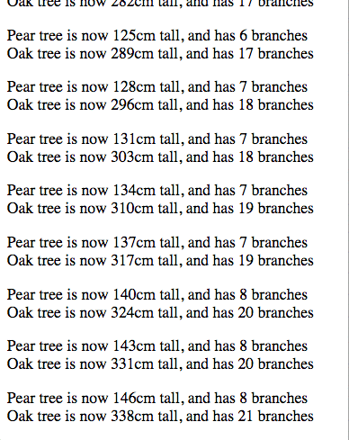

Use Jasmine to write your unit tests before you begin writing any implementation code.
Plant function defined.Tree function defined.increaseHeight on the prototype of Plant.decreaseHeight on the prototype of Plant.height property on Plant.grow on the prototype of Tree.trim on the prototype of Tree.trim method on Tree, the height of the Tree should be reduced by the integer value that is passed as an argument (e.g. PearTree.trim(2))trim method on Tree, the values of the branches property should be decreased by one.grow method on Tree, the height of the Tree should be increased by the integer value that is passed as an argument (e.g. PearTree.grow(2))Reference: Checkout the setInterval and clearInterval functions in JavaScript
height.increaseHeight and decreaseHeight. Each method should accept an integer value as input.Plant.prototype.increaseHeight = function (growth) { }
increaseHeight should increase the value of the height property by the amount passed in as an argument.decreaseHeight should decrease the value of the height property by the amount passed in as an argument.branches.grow and trim.grow method should accept an integer value as input.grow method should increase the height of the tree.trim method should accept an integer value as input.Tree.prototype.grow = function (amount) { }
trim method should decrease the height of the tree.trim method is called, the number of branches should decrease by one.branch should increase by one.var PearTree = new Tree();Pear tree is now 23cm tall and has 2 branches
Oak tree is now 57cm tall and has 4 branches
Every tenth time the trees are grown, invoke the trim method. Pass one value to the method for the pear tree, and a larger value to the method on the oak tree.
